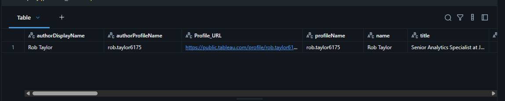
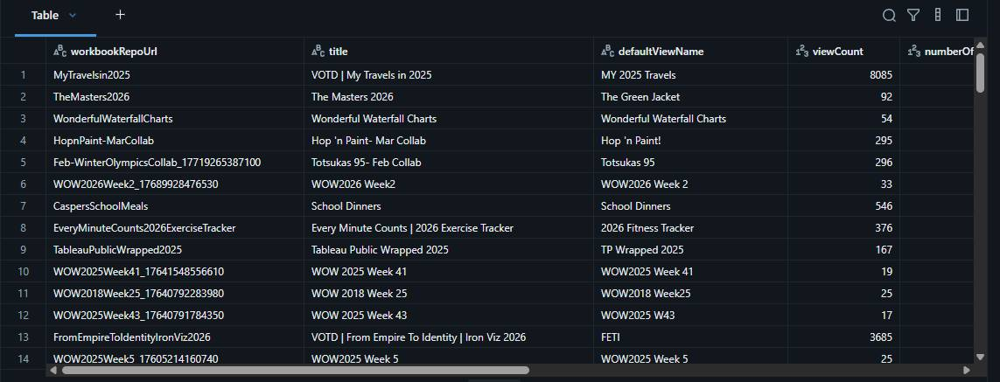
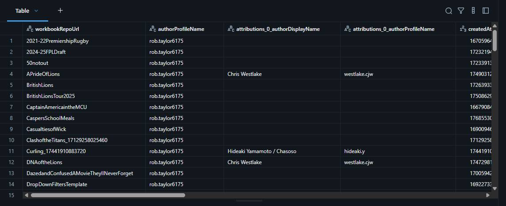
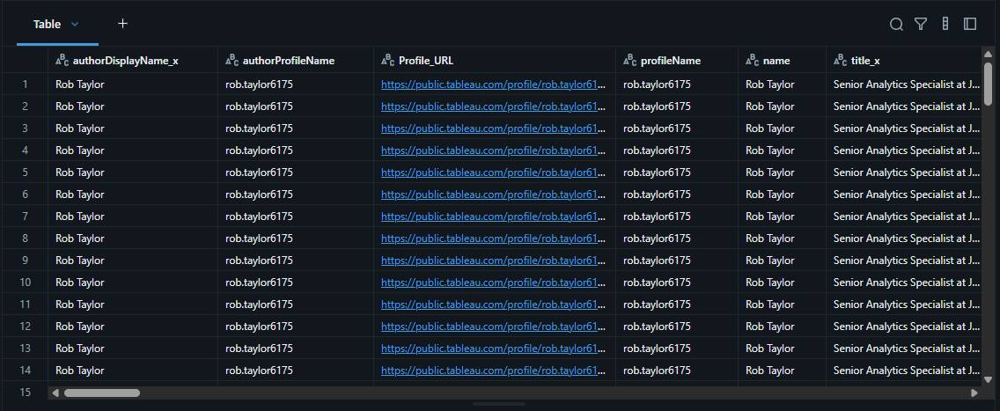

Using the Tableau Public API to Pull Data


A beginner-friendly walkthrough using Python and Databricks.
If you have ever wanted to create vizzes like above and wondered how to pull data from Tableau Public automatically, you are in the right place. This post walks through a Python workflow built in Databricks to collect profile and workbook data from Tableau Public using their API. By the end you will understand each step of the process, what the code is doing, and what the output looks like.
What is an API?
An API (Application Programming Interface) is simply a way for two pieces of software to talk to each other. When you visit a Tableau Public profile in your browser, Tableau's servers send back data to display on the page. An API lets you request that same data programmatically, so instead of clicking through a website, you can write code to pull exactly what you need.
Tableau Public exposes several API endpoints (URLs you can call) that return data in JSON format. JSON is just a structured text format that is easy for code to read and process. We will be using three main endpoints in this walkthrough:
- Profile API: returns details about a user's profile
- Workbooks API: returns a list of a user's published workbooks
- Single Workbook API: returns deeper detail on an individual workbook, including creation/publish/update dates and file size
However, if you want to dig deeper into the available resources check out Will Sutton's Git Hub repository. This is a fantastic overview and a where I started my learning journey.
The Overall Workflow
- Start with a list of Tableau Public usernames
- Filter out any blanks and fetch profile info for each user
- Pull a list of all their published workbooks
- Construct image preview URLs for each workbook
- Fetch deeper detail on each individual workbook
- Combine everything into one clean table ready for analysis
Each step builds on the one before it. Let's go through them one by one.
Step 1: Set Up Your List of Users
Objective: Create and display a list of Tableau Public profiles to process.
What Is Happening:
- A Python list of profiles is defined, including IDs, names, and Tableau Public usernames.
- This list is converted into a Spark DataFrame for scalable processing and later use with Spark and Pandas operations.
- The DataFrame is displayed for initial verification.
Why: Starting with a structured list of user identifiers (Tableau usernames) allows the subsequent automation to fetch each person's profile and workbook data via the Tableau Public APIs. Using Spark ensures scalability for larger profile lists in the future.
# Create a list called 'profile_list'.
# This list contains one tuple (a group of values).
# Each tuple represents a Tableau Public Profile.
# The three items represent: id, name, and username. The username can be taken from the profile URL.
profile_list = [
("1", "Rob Taylor", "rob.taylor6175")
]
# Use Spark's createDataFrame function to turn the list into a Spark DataFrame (a table-like structure).
# We tell Spark the names of the columns: 'id', 'name', and 'username'.
profile_df = spark.createDataFrame(profile_list, schema=['id', 'name', 'username'])
# Display the DataFrame in a nice, readable table format in Databricks.
display(profile_df)Step 2: Filter And Fetch Profile Information
Objective: Clean up the profile list and gather detailed profile information per ambassador.
What Is Happening:
- Blank or null usernames are filtered from the DataFrame.
- A filter and limit operation ensures only valid and a manageable set of profiles are processed in initial development/testing.
- Profile information is retrieved for each user by:
- Instantiating a ProfileDataCollector class, which calls the Tableau Public profile API for each username.
- Parsing and normalizing fields (address, social links/websites, counts, settings).
- Handling both clean and failed API responses, returning uniform records.
- The resulting profiles are collected into a Pandas DataFrame for downstream use and displayed.
Why: Filtering ensures that only valid, actionable Tableau Public usernames are processed, preventing wasteful API calls. Using a collector class modularizes API logic, and explicit parsing of JSON fields (“websites,” “address”) ensures data normalization for analytics downstream. Robust error handling ensures one failing user does not derail the complete process.
The dataframe is filtered and limited to our requirements.
# Filter out blanks and limit to top 10
filtered_df = profile_df.filter(
(profile_df.username != "") & # Only keep rows where 'username' is not an empty string
(profile_df.username.isNotNull()) # Also only keep rows where 'username' is not null (missing)
).limit(12) # Only keep up to 12 rows (even if there are more results)
display(filtered_df) # Show the resulting filtered DataFrame as a table in DatabricksThe ProfileDataCollector class then loops through each username, calls
https://public.tableau.com/profile/api/{username}, and extracts fields including name, title,
organisation, follower counts, social links, and location. Two fields needed extra parsing: address (comes back as a
single JSON string, split into country/state/city) and websites (a list that gets categorised into LinkedIn, Twitter,
GitHub, etc.).
Example profile data returned from the API

Step 3: Pull All Published Workbooks
Objective: Retrieve metadata about all visible (public) workbooks for each persons profile.
What Is Happening:
- WorkbookDataCollector class is implemented to handle workbook-API interaction.
- For each profile, the API is paginated (if necessary) to gather all workbook records (repo URL, title, views, favorites, etc.).
- All records are aggregated into a single Pandas DataFrame and displayed.
Why: Tableau Public APIs require pagination for users with many workbooks, and the collector class encapsulates this complexity, abstracting raw API interaction from upstream and downstream workflow stages. This enables analysis of publishing activity, reach, and engagement per ambassador, and sets up further enrichment steps
The WorkbookDataCollector class fetches all publicly visible workbooks per user. The API returns 50 at a
time, so the code paginates automatically. Fields captured include; title, repository URL, default view name, view count, favourites count.
Example workbooks data returned from the API

Step 4: Build Workbook Preview Image URLs
Objective: Augment the workbook metadata with supplemental fields, notably image preview URLs per workbook.
What Is Happening:
- A function add_workbook_columns adds two columns:
- Workbook_Order – sequential number per author, for ordering/visualization.
- Workbook_Image_URL – dynamically constructed based on Tableau Public’s static image URL patterns, derived from workbook repo and view URLs.
- Patterns are carefully constructed to match Tableau’s public CDN URL definitions (e.g., subdirectory slicing, substitution of segments, prefix/suffix fixing).
Why: Preview images are not part of standard workbook metadata but are highly useful for analytics and dashboarding. Automating this via string logic ensures images can be referenced/displayed without manual post-processing in Tableau or other BI tools
The standard API doesn't include thumbnail URLs, but Tableau hosts static previews that can be constructed from the
workbook data. Two new columns are added: Workbook_Order and Workbook_Image_URL.
Step 5: Get Deeper Workbook Details
Objective: For each workbook, retrieve and enrich with low-level metadata, such as precise size, creation/update timestamps, and official author attribution.
What Is Happening:
- SingleWorkbookCollector class batches calls to the single-workbook endpoint.
- For each unique workbook, fields including attributions, publish/update dates (as provided in ms since epoch), and file size (bytes) are extracted.
- Helper functions convert milliseconds to datetime, bytes to human-readable format, MB, GB, etc.
- DataFrame is cleaned, new fields added, and then displayed.
- Status/progress print statements are included for traceability on larger runs.
Why: Expanding from summary to detailed workbook data enables richer analytics (e.g., storage analysis, publishing cadence, collaboration trends via attribution, etc.). Conversion and normalization (dates, sizes) are vital for analysis in BI platforms and for communicating findings with stakeholders.
A separate single-workbook API endpoint returns: attribution info (for collaborations), creation/publish/update dates (as Unix timestamps in ms, converted to readable datetimes), and file size (converted to KB/MB/GB).
Example workbook detail data returned from the API

Step 6: Combine Everything
Objective: Merge all previous outputs into a final, unified DataFrame per profile per workbook, suitable for analytics/reporting.
What Is Happening:
- The profile, workbook summary, and workbook detail DataFrames are joined, aligning by keys (authorProfileName, workbookRepoUrl).
- Additional diagnostics (e.g., count of profiles without associated workbooks) are printed to guide QA.
- Final result is displayed, structured with all profile/workbook/detail attributes in columns.
Why: Combining all sourced/enriched data into a single table supports flexible downstream reporting, BI dashboarding, or export and preserves all context (profile, activity, engagement, content, technical/operational details) in a unified schema.
A series of left joins brings all three datasets together into one flat tableand keeps every profile row even if workbook data is missing, ensuring no records are dropped.
Example final combined table, one row per workbook

Now You Have Your Data, What Can You Do With It?
- Track engagement: which workbooks get the most views over time
- Analyse publishing cadence: how frequently a user publishes
- Identify collaborations via the attribution fields
- Build a portfolio showcase using
Workbook_Image_URLthumbnails - Monitor storage usage with the size fields
- Compare profiles across multiple users
The Last Thread
Looking back at this walkthrough, what looks like one long script is really a chain of small, repeatable steps. You start with usernames, call the same endpoints Tableau uses in the browser, and end with a flat table you can drop into a viz, a dashboard, or a scheduled job. The unglamorous parts; pagination, pauses between requests, cleaning nulls before Spark sees them, are what turn a clever API call into something you can run every week without babysitting it. Learning how to do this really allowed me to play with the vizzes on my Tableau Public profile and create some really fun things.
If you build your own version, start with a single profile and prove each step before you widen the list.
Will Sutton's repository is still the
best place to explore what is available; this post is just one path through it. I'd love to see what you make with the
data; portfolio showcases, engagement tracking, collaboration maps, and if something in the code does not behave the way
you expect, that is usually where the learning starts.
Rob.